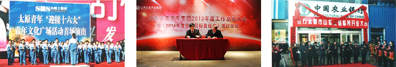

责任洪达，达己成人
创始于上世纪八十年代的太原万长集团，是本土企业在改革开放的洪流中应势而起的典范之一，在创始人冯常洪“创知名品牌，做百年企业”思想的指导下，成为了太原市第一家民营集团企业。
励精图治的二十余载，造就了万长集团的飞速发展，迅速成为业界领军企业；用人唯贤的二十余载，促进了万长集团的科学管理，从而成为业界学习标榜；勇于创新的二十余载，引导了洪达集团的多元模式，拓展成为业界追随楷模。二十余载的风雨，二十余载的甘苦。万长集团用二十余载的时间，创造了一个又一个奇迹，成就了一个又一个辉煌。
万长集团的核心价值理念是“洪怀志远，达己成人”，寓意着洪达是一个有梦想、有责任、有担当的企业，也同时在倡导所有的洪达人去践行这种理念。在万长，以合作商利益为先，以自身利益为后；在洪达，以员工利益为先，以企业利益为后；在洪达，以社会利益为先，以自身利益为后。
担任合作商责任
合作商于万长而言，是伙伴，是利益共同体，更是如唇亡齿寒般的关系。万长尊重、珍惜每一位合作商，也希望得到合作商更多的支持。因为只有双方的精诚合作，才能赢得消费者的认可，才能争得更大的市场份额。
此外，为了得到供应商更多的支持，山姆士超市还制定了缩短账期、快速结账等一系列有效服务政策，赢得了广大供应商的认可。
万长集团旗下必高汽车集团，通过加强自身管理，完善各项工作流程，在完成厂家制定销售任务的同时，还出色的完成各项管理任务。这是对合作商的尊重，也是对自身工作的尊重。优秀，对于洪达来讲，不是一种要求，而是一种态度。
担任员工责任
有近5000名来自大江南北员工，他们被分配在不同的岗位，开展着不同的工作，但是他们却有着一个共同的大家庭，就是万长。
加入万长的每一位员工，都会接受由各层级人力资源部开展的各类培训，通过培训让大家了解洪达、融入洪达，通过培训让大家加强自身的专业素养，通过培训让大家对自己的职业规划有清晰的认知。
根据“让最优秀的人享受最奢侈的待遇”的薪资政策，万长在各分子公司开展薪资改革，采用激励性强、公平性高的宽带薪酬模式。让每一位员工可以通过提升自身工作效率，加强自身职业素养，以此来逐步提升自身薪资待遇。同时，经集团董事长办公室会议研究决定，集团将根据各分子公司经营情况，每年拿出一定比例的企业利润与员工进行利润分享。除此之外，还有其他相关的福利政策，如带薪年假、法定节假日、产假等福利假期，每年都会有的夏季福利、传统节假日福利等。关键岗位还会有相应标准的交通补助、通讯补助和职称补贴等等。
积极向上、激人上进的企业文化是万长企业中和谐人文环境的关键所在。洪达旗下各分子公司都会不定期开展各类企业文化活动，让大家在工作之余，通过各类文化活动放松心情，缓解工作压力，增进员工之间的感情交流。
万长旗下必高汽车集团各分子公司每天早上大家都会大声宣导企业理念，并高声唱响必高司歌——《我们是充满激情的必高人》。通过这种形式的晨会，让每一位员工可以充满工作热情，以积极向上的态度迎接新一天的工作。
担任社会责任
万长作为本土企业中的领军企业之一，其多元化的发展模式为社会解决5000多个就业岗位，累计为国家纳税7亿多元，为社会各项公益事业捐赠5000多万元，始终践行着企业对社会的责任。
万长旗下山姆士超市自成立以来，一直致力于为广大市民提供舒适、安全、便捷的购物场所，通过加强自身管理机制，提升整体服务质量，赢得了广大消费者的认可。此外，还逐步拓展经营范围，加大供应链，成就了一个又一个个体户商家。
“创知名品牌，做百年企业”，是万长企业的愿景与使命。在三晋这片热土中，太需要更多的人去弘扬与传承百年晋商精神，太需要更多的企业去打造属于三晋本土的知名品牌。续写晋商新辉煌，万长一直在努力。
